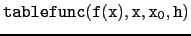
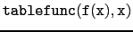
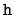
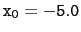
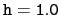
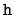
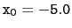
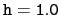

suivant: Derivées et derivées partielles
monter: Dérivation et variation
précédent: Maximum et minimum d'une
Table des matières
Index
Tableau de valeurs et graphe : tablefunc table_fonction et plotfunc
On peut avoir, dans le tableur, les différentes valeurs d'une expression
f (x) pour
x = x0, x0 + h,...., grâce à la commande :
 ou
.
Dans ce cas les
valeurs de départ  et le pas , valent par défaut :
 et
.
et le pas , valent par défaut :
 et
.
On ouvre un tableur avec Alt+t.
Puis, on sélectionne une case du tableur (par exemple C0) et pour
avoir une table de "sinus", on tape, dans la ligne de commande du
tableur :
tablefunc(sin(x),x)
On obtient deux colonnes x et sin(x) :
- dans la colonne x il y a la valeur du pas h (1.0) et le départ
de l'évaluation numérique (-5.0), puis une formule, par exemple
=C2+C$1 qui a été recopiée vers le bas.
- dans la colonne sin(x) il y a
"Tablefunc" puis une formule, par exemple =evalf(subst(D$0,C$0,C2)), qui a été aussi recopiée vers le bas.
Les valeurs de sin(x) s'affichent alors en face des x
correspondants.
On peut bien sûr changer le pas ou la valeur de départ ou encore remplacer
sin(x) par cos(x) en changeant la valeur de la cellule
correspondante.
La représentation graphique se fait avec la commande :
plotfunc pour cela voir 3.6.1.
suivant: Derivées et derivées partielles
monter: Dérivation et variation
précédent: Maximum et minimum d'une
Table des matières
Index
Documentation de giac écrite par Renée De Graeve